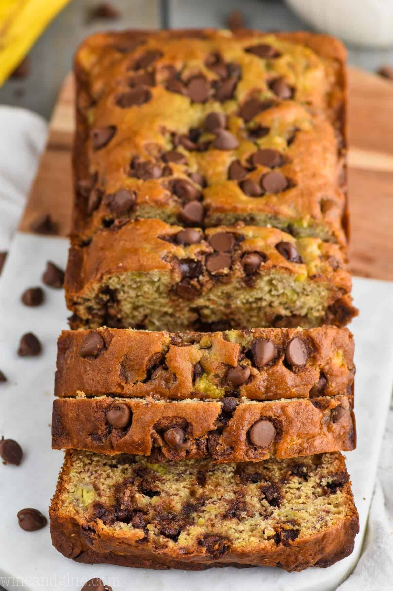

Single Serving Chocolate Chip Banana Bread

Description
The beauty of this soft, fluffy chocolate chip banana bread is its simplicity in preparation. Just
in a few minutes, a wonderful serving of deliciousness is ready to consume.
Ingedients
- 1 ripe banana
- 1 tbsp olive oil
- 2 tbsp maple syrup
- 1 egg
- 1/2 tsp vanilla extract
- 1/3 cup all purpose flour
- 1/2 tsp baking soda
- pinch of salt
- 2 tbsp chocolate chips
Steps
- Mash the banana with a fork. Whisk in the olive oil,
maple syrup, egg and vanilla. Stir in
the flour, baking soda and salt until
well combined, then stir in the chocolate chips.
- Transfer to a microwave safe container. Microwave for ~2 minutes. Note: if
the bottom still looks wet, microwave for extra 10 seconds.